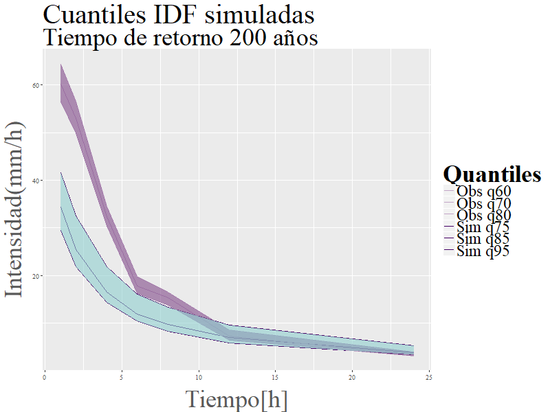

La necesidad de cuantificar el riesgo de ocurrencia de precipitaciones de cierta intensidad y duración es vital para las obras de ingeniería. Una herramienta que sirve para estimarlo son las curvas Intensidad-Duración-Frecuencia (IDF). La exactitud de estas curvas depende de datos de calidad y resolución temporal horaria. Sin embargo, estos no siempre están disponibles o se tiene un registro muy corto que dificulta inferir propiedades estadísticas de la IDF. Un método de estimación de las curvas IDF sobre territorio peruano es desarrollado en esta investigación, utilizando la distribución General de Extremos (GEV) para calcular las intensidades de diferente duración en 5, 50, 100 y 200 años de retorno. El método se validó comparando las curvas generadas con datos observados y simulados para la Mina Toquepala ubicada en la sierra sur del Perú. Los datos horarios simulados fueron generados con el modelo estocástico de pulso rectangular de Bartlett-Lewis (BLRPM), el cual fue calibrado con información diaria observada y datos corregidos de cada 3 horas del satelital TRMM 3b42. Producto de esta comparación se observó que las series obtenidas con BLRPM capturan las principales características estadísticas de las curvas IDF. Se aplicó el método validado a los datos de precipitación diaria provista por el Servicio Nacional Meteorología e Hidrológica del Perú (SENAMHI) que se encuentra distribuida en las cuencas hidrográficas peruanas para la obtención de las curvas IDF a nivel nacional punto-estación.
